Sua estante no bolso, mesmo sem internet
Busque livros, escaneie o código de barras de um exemplar físico e acompanhe a leitura página por página. O que você já viu fica salvo no aparelho.
Usa a API pública da Open Library: gratuita, sem chave e sem cadastro.
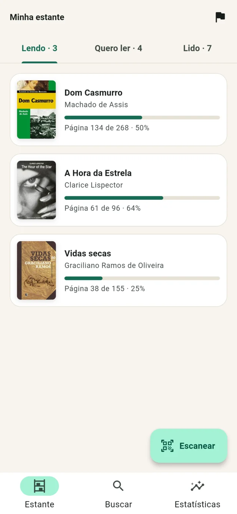
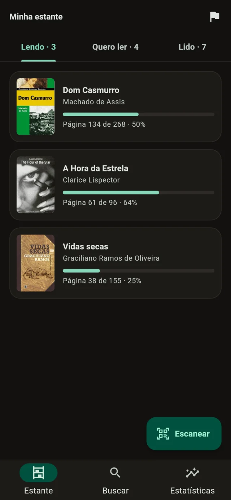
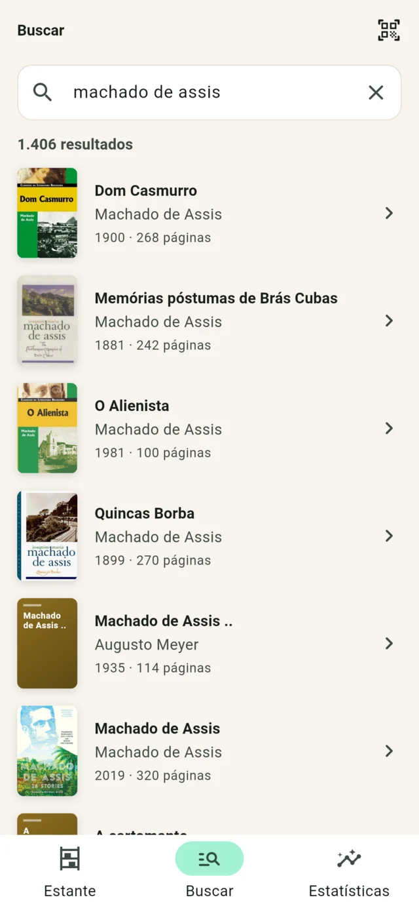
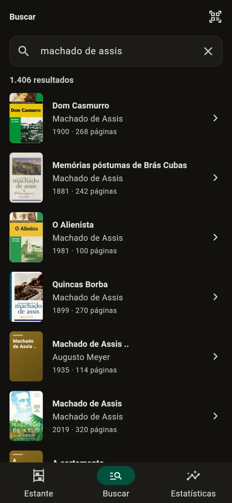
Role até o fim do catálogo
Digite um título ou autor e os resultados aparecem quando você para de digitar. A próxima página chega antes de você alcançar o fim da lista, com as capas baixadas uma vez e guardadas no aparelho.
- Esqueleto enquanto carrega, em vez de uma tela em branco com um círculo girando.
- Erro só na página seguinte? A lista continua na tela e o rodapé oferece "Tentar de novo".
- Sem capa na Open Library, o app gera uma com o título e o autor.
- Nada encontrado vira uma mensagem que sugere buscar pelo autor.
Aponte para a contracapa
O scanner só aceita códigos que são mesmo ISBN: prefixo 978 ou 979 e dígito verificador correto. Assim o código de barras do preço ou de outro produto não abre um livro errado. Sem câmera ou sem permissão, dá para digitar.
Deep link que abre o livro no app: estante://app/isbn/9788500507007
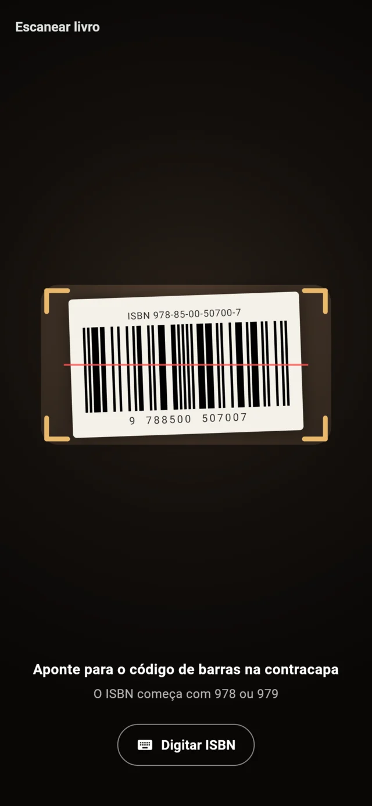
Sem internet, sem tela em branco
A tela lê o banco do aparelho, e a API só atualiza esse banco. Livros já vistos, buscas recentes, sinopses, capas e a estante inteira continuam lá no metrô ou no avião. Escolha uma situação para ver o que o app faz.
Tempos aproximados. As novas tentativas esperam 600 ms e depois 1,2 s; um erro 404 não é repetido.
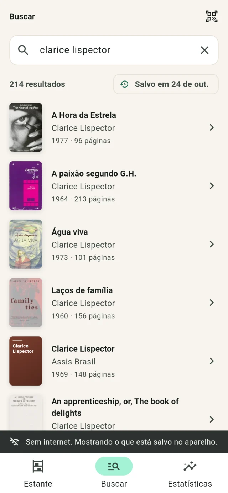
Página por página
Diga em que página você está e o app registra quanto leu. Chegar à última página move o livro para "Lido". Os registros alimentam as estatísticas e a meta do ano.
- Sinopse da Open Library, limpa do Markdown e salva para ler offline.
- Livros e páginas por mês nos últimos 6 meses, e a sequência de dias lendo.
- Meta anual com ritmo: 15 livros dá cerca de 1,3 por mês.
- Lembrete diário por notificação no horário que você escolher, reagendado se o celular reiniciar.
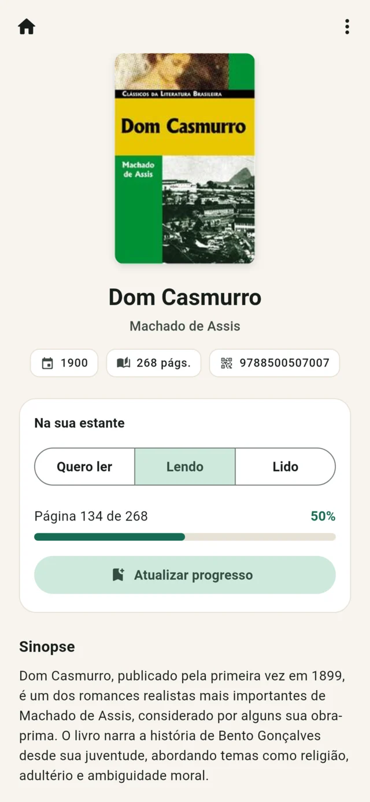
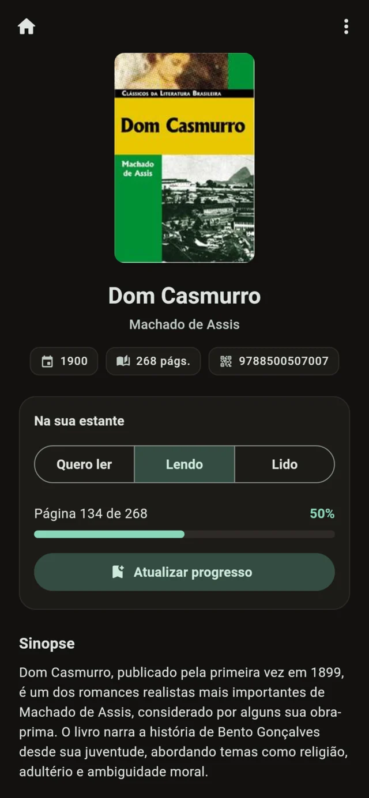
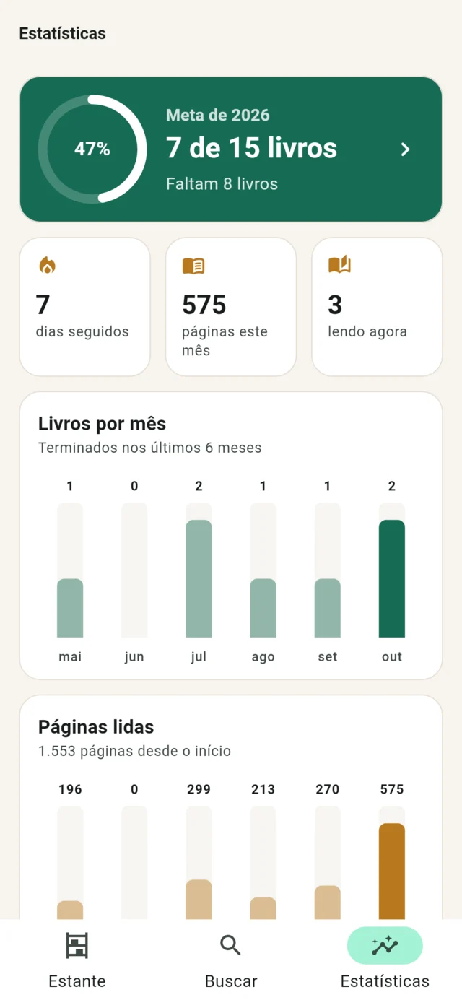
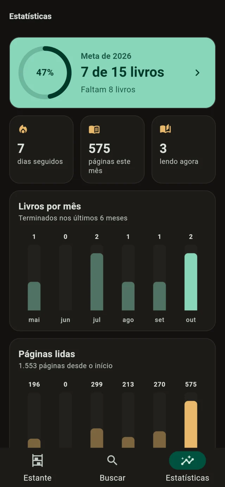
Todas as telas
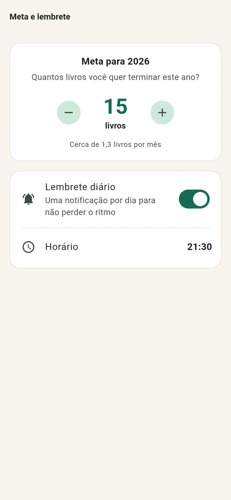